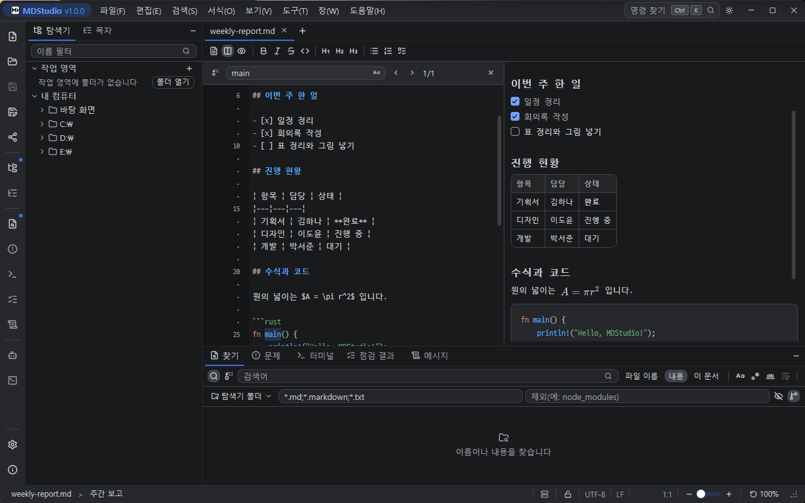

찾기와 바꾸기
문서 안에서, 또는 폴더의 여러 파일에서 한꺼번에 찾고 바꿉니다.
문서 안에서 찾기
- 검색 > 찾기(Ctrl+F)를 클릭합니다. 찾기 줄이 열리고 선택한 텍스트가 검색어로 들어갑니다.
- 검색어를 입력합니다. 찾은 곳이 강조되고
2/5처럼 위치와 개수가 나옵니다. - Enter 는 다음, Shift+Enter 는 이전 일치로 갑니다. 끝에서는 처음으로 돕니다.
- Esc 를 누르면 찾기 줄이 닫히고 편집기로 돌아갑니다.
- 검색 칸 오른쪽 버튼은 대소문자 구분입니다. 검색어는 글자 그대로 찾습니다.
- 검색 > 다음 찾기(F3)·검색 > 이전 찾기(Shift+F3)는 마지막 검색어로 찾습니다.
- 단어를 오른쪽 클릭해 이 단어 찾기를 선택해도 됩니다.

문서 안에서 바꾸기
- 검색 > 바꾸기(Ctrl+H)를 클릭합니다. 바꿀 텍스트 칸이 함께 열립니다.
- 검색어를 입력하고 Tab 을 눌러 바꿀 텍스트를 입력합니다.
- [바꾸기] 버튼은 현재 일치 하나를, [모두 바꾸기] 버튼은 모든 일치를 바꿉니다.
모두 바꾸기도 Ctrl+Z 한 번으로 실행 취소합니다. 읽기 전용 문서에서는 바꾸기 칸이 나오지 않습니다.
파일에서 찾기
- 검색 > 파일에서 찾기(Ctrl+Shift+F)를 클릭합니다. 아래 도구 창에 찾기 탭이 열립니다.
- 「내용」, 「파일 이름」, 「이 문서」 중 찾을 대상을 선택합니다.
- 범위 드롭다운에서 「탐색기 폴더」, 「현재 문서 폴더」, 「폴더 선택...」 중 하나를 선택합니다.
- 검색어를 입력하고 Enter 를 누릅니다.
결과는 파일마다 묶이고 상태 줄에 일치 수가 나옵니다.
| 옵션 | 뜻 |
|---|---|
| 「대소문자 구분」·「단어 단위」·「정규식」 | 검색어를 읽는 방법 |
| 「여러 줄」 | 내용 찾기에서 정규식이 줄을 넘어 맞습니다 |
| 「와일드카드」 | 「이 문서」에서만. * 는 아무 글자, ? 는 한 글자 이하. 정규식과 함께 켜지지 않습니다 |
| 포함·「제외」 칸 | *.md;*.txt 처럼 ; 로 나눈 파일 마스크 |
| 「숨김 파일 포함」·「.gitignore 따르기」 | 처음에는 숨김 파일을 찾지 않고 .gitignore 를 따릅니다 |
- 검색어에
path:회의(경로),file:보고(파일 이름),line:(설탕 밀가루)(같은 줄에 모두),-초안(그 줄 빼기)을 섞어 쓸 수 있습니다. - 검색 칸의 ↑·↓ 는 최근 검색어 10개를 불러옵니다. 옵션과 범위는 다음 실행 때도 남습니다.
- 명령 팔레트(Ctrl+K)의 「문서에서 모두 찾기」(Ctrl+Alt+F)는 「이 문서」 쪽으로 엽니다.
결과 다루기
- 결과 줄을 클릭하면 그 문서가 열리고 일치한 곳이 선택됩니다.
- 오른쪽 클릭 메뉴에는 「경로 복사」, 「파일 탐색기에서 보기」, 「모두 접기」 등이 있습니다.
- 상태 줄의 정렬 버튼은 「찾은 순서」, 「경로순」, 「일치 많은 순」을 차례로 바꿉니다.
- 찾는 중에는 Esc 나 「중지」로 멈춥니다.
- 결과 파일 5,000개나 일치 20,000개에 닿으면 멈추고 「상한 도달」이 나옵니다.
- 16MB 를 넘는 파일과 이진 파일은 건너뛰고 「건너뜀」 수로 알립니다.
찾은 내용 바꾸기
- 「내용」이나 「이 문서」로 먼저 찾습니다.
- 찾기 도구 창의 바꾸기 버튼을 클릭하고 「바꿀 내용」을 입력합니다.
- 「미리보기」를 클릭합니다. 「찾은 내용 바꾸기」 창에 파일마다 바뀌는 줄의 전후가 나옵니다.
- 바꾸지 않을 줄은 체크를 끄고 [확인] 버튼을 클릭합니다.
- 열린 탭은 편집기에서 바꾸고 저장하지 않습니다. 탭마다 Ctrl+Z 한 번으로 실행 취소합니다.
- 결과 파일이 300개를 넘으면 바꾸지 않습니다. 범위를 줄여 다시 찾습니다.
- 읽기 전용 탭, 손상된 문서, UTF-8 이 아닌 문서, 미리 본 뒤 바뀐 파일은 건너뛰고 그 수를 알립니다.
- 「이 문서」에서는 「하나 바꾸기」로 커서 뒤 일치를 하나씩 바꿉니다. 끝이면 처음부터 찾습니다.
주의: 열려 있지 않은 파일은 디스크에 바로 저장되고 실행 취소할 수 없습니다.
미리보기 안에서 찾기
보기 형태가 보기 > 보기 형태 > 미리보기만이면 편집기 도구 모음에 「미리보기에서 찾기」 칸이 있습니다.
- 입력하는 대로 찾은 곳을 강조하고 개수를 보입니다. 대소문자는 구분하지 않습니다.
- Enter·Shift+Enter, 칸 옆 화살표, F3·Shift+F3 으로 다음·이전 일치로 갑니다. Ctrl+F 는 이 칸으로 갑니다.